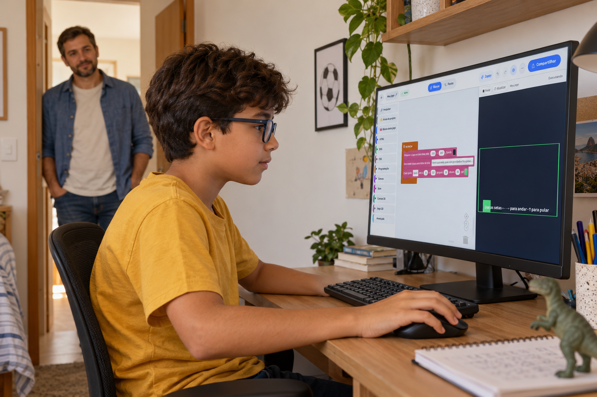
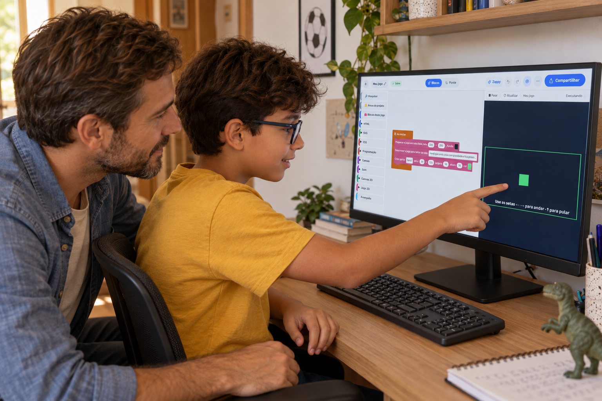
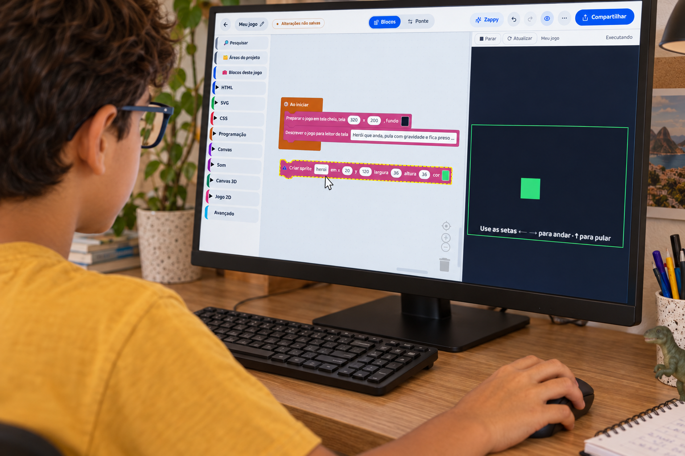
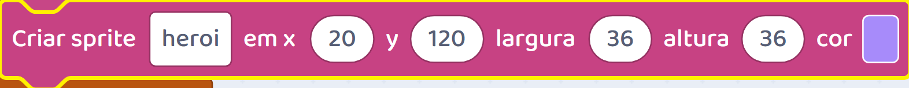
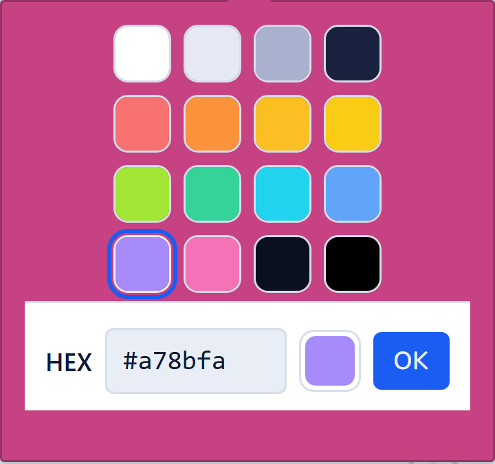
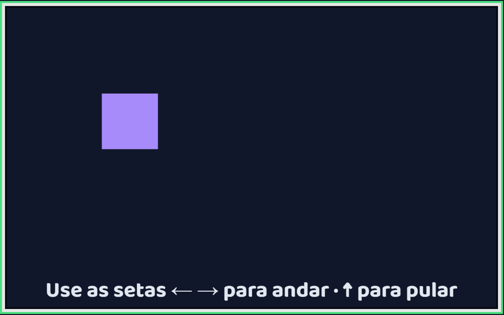
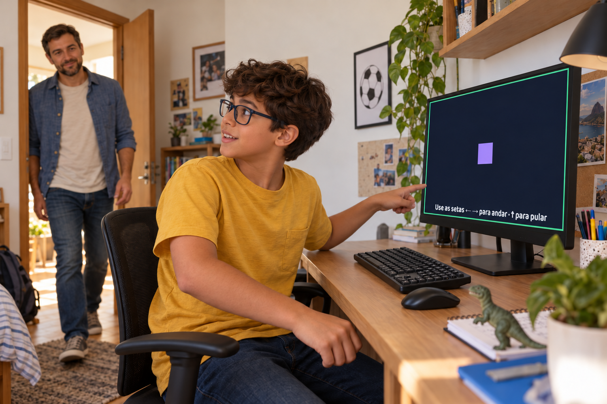
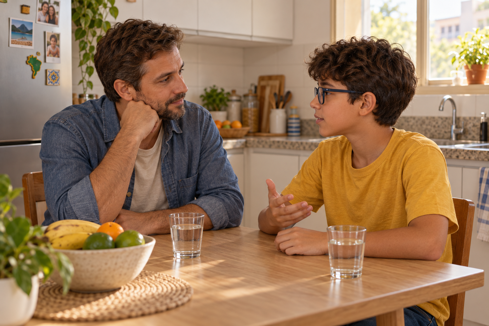
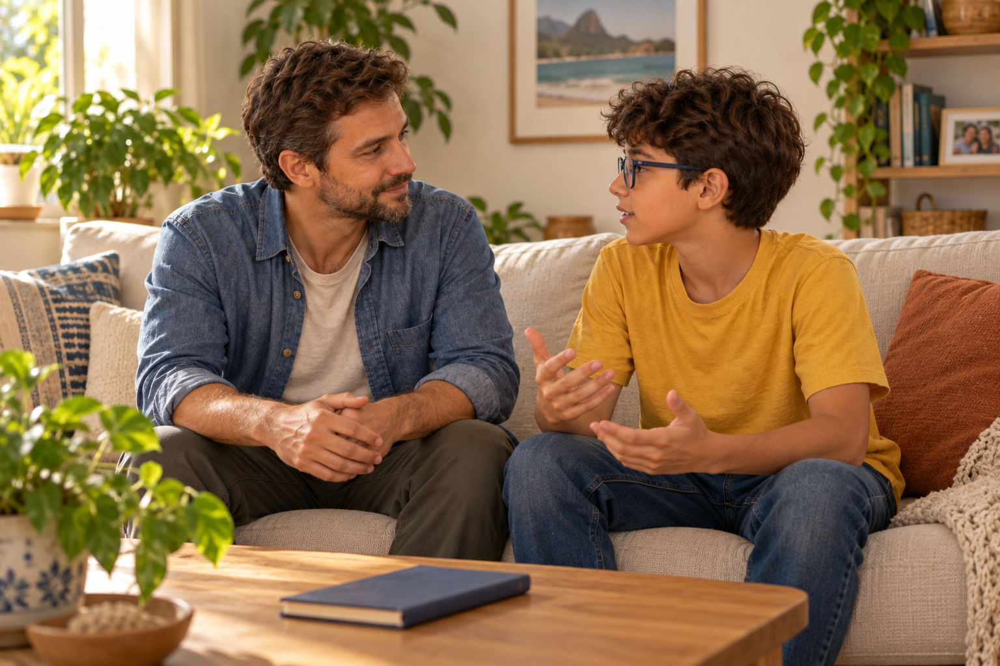

Antes de escolher
‘Gostei’ é um começo de conversa.
Antes de escolher a próxima atividade, descubra do que seu filho gostou.

‘Gostei’ é um começo de conversa.
Antes de escolher a próxima atividade, descubra do que seu filho gostou.

Peça um exemplo.

Foi o assunto, a explicação, uma parte que ele fez ou o resultado que apareceu?
Se ele está criando um jogo, observe como participa.

Pode querer testar uma regra de novo ou entender por que algo não funcionou.
Talvez ele queira fazer uma escolha própria.



Mudar a cor, acrescentar um personagem ou experimentar uma dificuldade diferente.
Ele também pode querer mostrar alguma descoberta.

Deixe que conte o que fez e pergunte se gostaria de continuar.
Essas são possibilidades para observar, não uma lista que ele precisa cumprir.

Se ficou com dúvida ou precisou de ajuda, conversem sobre essa parte também.
Conhecer a experiência e ouvir seu filho ajudam a escolher os próximos passos.

Siga o perfil para entender melhor a criação de jogos.